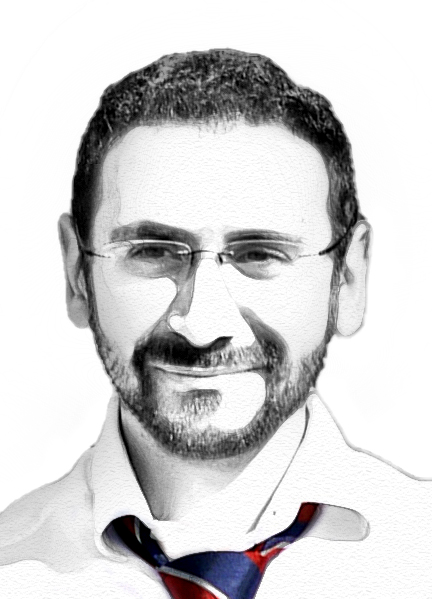

In a nutshell
Assistant Professor (
RTDa
) at the
Department of Computer Science and Engineering
, Università di Bologna;
member of the
Focus team, INRIA
;
member of the
Microservices Community
communication group;
awarded the
Seal of Excellence
by the European Commission for the project "
Choreographies for Energy-aware Reliable Internet-of-Things Systems
" (ChERIS) within the
Marie Skłodowska-Curie Actions - Individual Fellowships
2018, Horizon 2020 programme;
PhD obtained in 2016 with the thesis
Real-World Choreographies
on how to implement correct real-world distributed systems using the
choreographic programming
paradigm;
former member of the
Concurrency and Logic
group, the
DISI Jolie Lab
, and the
SPACES
group.
Programming Languages
·
Process Calculi
·
Choreographic
Programming ·
Microservices
·
Session
Types
·
Dynamic Adaptability
·
Security